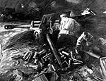
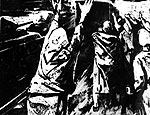

|
 |  |
Форсування Південного Бугу |
«Ні п'яді назад!» |
Синочка! |
Пам'яті матері і брата!
НАС НЯНЬЧИЛА ВІЙНА…
В історії будь-якого народу немає більш страшного явища, ніж війна. І немає сумніше дитинства, ніж повоєнне. Мої спогади про ті роки - це усього лише загострені війною окремі моменти пам'яті дитинства. Пишу про себе без удаваної скромності, тому що, як наставляє нас Пушкін, історія родини будь-якої людини є історією його батьківщини.
Перші спогади про Велику Вітчизняну війну пам'ять зберігає з 2-х років: ми в гостях у бабусі на Водопої, батько, ідучи на війну, тримає мене на руках. Я, показуючи на небо, говорю йому «пуляшки, пуляшки»,- це був німецький парашутний десант, скинутий на Кульбакінський аеродром. Батько пішов служити до флоту. Усе своє життя до війни і після ми жили в різних дворах, але на одному кварталі тоді вул. Плеханівській, між вул. Радянській і вул. Різдв’яній. Мати не була членом компартії, але за активну роботу на Чорноморському заводі (брата мого Віталія народила в Севастополі під час передачі корабля флоту, в 1929 р.) побувала на Всесоюзному з'їзді жінок, де виступав Сталін. За це вона могла постраждати двічі - від своїх і від німців, але Бог милував. За 4-5 років до війни всіх активісток жіночого з'їзду потихеньку забирали в табори. Добрі люди порадили матері без шуму зникнути, і вона виїхала до Дніпропетровська. Перед війною мати і батько повернулися в Миколаїв уже з двома синами. Мати залишилася в місті, будучи вагітною, маючи двох малих дітей, і через те не ризикнула евакуюватися. Коли німці ввійшли в місто, сусід-зрадник указав гестапо на мою матір, як на активістку партії. Молодий гестаповець ввійшов у квартиру і побачив вагітну жінку з двома малими синами. Мати кинулася до ікон і це, імовірно, якось на нього подіяло. Російською мовою він сказав, що на неї, як на активну комуністку, доніс Бородецький, і дав годину часу на збори. Захопивши ікони, у чому були, ми втекли до родичів на Водопій, тоді це був пригород. Жили в будинку в дідуся і бабусі, ховалися в підвалі під будинком.
У пам'яті залишився момент зими 1941 року. Ми з дідом, інвалідом Громадянської війни, спали на грубці, а вся підлога була зайнята вщент сплячими румунськими солдатами. Довелося мені “по малому” сходити прямо на сплячих солдатів, які нічого не зрозуміли через утому (дід потім з гордістю усім розповідав про це), але ранком вони в нас вичистили всіх кур і забрали всі продукти. Усі військові роки в окупації це була боротьба за виживання і благання про порятунок ближніх у льохах, освітлюваних лампадами з гільз снарядів, кутання в ганчір'я від холоду і голод, голод. На все життя запам'ятався березень 1944 р. Німці відступають. Дідусь недавно помер, а бабуся пішла до інших дітей тамо ж на Водопої. Мати взяла коромисло, ведра й пішла по воду до ріки Інгул. У будинку залишилося нас троє дітей. Німці, розчищаючи поле перед оборонною лінією міста, підкладають під дома міни і протягають бікфордів шнур. Один німець чомусь вирішив увійти в наш будинок. Старший брат, Віталій, побачивши німця, кинувся до ікон. Німець крикнув: «вэк, вэк, шнелє». Ми встигли взяти тільки дві ікони: Божої Матері і Святого Миколая. Вони і врятували нам життя. Відійшли від будинку метрів на 20 під розкидисту вишню. Німець відразу підпалив бікфордів шнур, і будинок був висаджений. Дах залізний, злетівши догори, опустився на вишню, під якою ми стояли. Мати, підходячи до будинку, побачивши, що дома не має, кинула коромисло з ведрами. Побігла до пожарища, думаючи, що ми там загинули. Але, побачивши нас, живими з іконами під деревом, втратила свідомість і впала на землю. Ми перебралися до сестер матері, тамо ж на Водопої. У матері було п'ятеро сестер і безліч дітей і всі ми ховалися в глибоко виритому підвалі. Чоловіки всіх сестер були на війні. Як зараз пам'ятаю, радянські війська вже поставили гармату за будинком. Мати, зібравши все борошно, що було в нас, стала готувати для наших солдатів на кухні, поруч з будинком, галушки. Розкотала тісто, але згадала, що забула взяти сіль і спустилася до нас у підвал за нею. У цю ж мить німці, цілючись у нашу батарею, одним снарядом вщент рознесли кухню. Якби снаряд потрапив у підвал, то була б братська могила...
Після війни ми повернулися на свій квартал у центрі міста. Комунальна кімната із сусідами в коридорі в старому будинку, ніяких меблів. Ліжка немає - на підлозі розстелена ковдра і загальна ковдра зверху. Під ними спимо вчотирьох. Туалет з дірами - у дворі, загальний на всю Радянську вулицю. Вода теж у дворі - колонка. Печі топимо дровами й вугіллям. Готування їжі на примусах у дворі на веранді. Запам'ятався день 9 травня 1945 року, військовий парад на вул. Радянській, море народу і квітів, і загальна радість - війна закінчилася! Один з військових посадив мене на плечі, щоб можна було спостерігати парад. Можу з усією відповідальністю заявити, що ніколи не було такого єднання і братання між незнайомими людьми, начебто б щойно народженими для нового життя, в якому ніколи не буде війни. Справедливості заради все-таки скажу, що таким радісним днем було 12 квітня 1961 року, коли в космос полетів Юрій Гагарин. Ми в цей день їхали автобусом з Одеси до Миколаєва. Поверталися з Ленінграда після зустрічі баскетбольних команд ЛКІ і МКІ. Вискочили з автобуса – радість була невимовна! Але все-таки це була усього лише коротка мить. А в післявоєнні роки люди ще довгий час були відкриті один одному. У дворах збиралися всі разом, і кожен приносив усе, що було в нього. Панувала максимальна співчутливість. Я пішов у школу №7, що розташовувалося навпроти, в будинку (колишнього Дома вчителя), поруч з церквою Різдва Богородиці (тоді ДК Радянської Армії). На вулицях безліч інвалідів війни і післявоєнний голод. Хліб тільки по картках. У травні, коли зацвітала акація, після школи і на змінах учні сидять на акаціях і від голоду набивають нею животи. У моєму центральному районі я регулярно оббігав усі кущі в руїнах будинків з посльоном, акацією і залізними деревами із солодкими ягодами. Одне таке дерево, біля магазина Когана (вул. Радянська 3), запам'яталося на все життя. Після школи, зайнявши місце в довгій черзі до хлібній крамниці, залишивши на землі сумку з картками, уліз на дерево. Коли спустився вниз – карток на всю родину на весь місяць не знайшов. Додому повернувся пізно. Брат, поклавши мене на підлогу, з досади відходив ременем. Мати продала єдиний відріз матерії на пальто і купила картку. Але хліба не вистачало, тоді матір купила небагато кукурудзи. Молол її ручним млином, виготовленим з гільзи снаряда, і з жадібністю набивав рот немеленою кукурудзою. З кукурудзи варили мамалигу, замість хліба.
Післявоєнна школа це тема особливої розповіді. Витівки школярів з «Кандуіта» і «Швамбранії» Лева Кассиля мерхнуть перед нашими. Класи розділені на парубкові і дівочі. На змінах хлопчики й дівчинки кучкуються окремо. Усякий хлопчик, замічений з дівчинкою, був уже «бабій», і нехтувався усіма. Потай від батьків курили і робили наколки на руках: «Не забуду матір рідну». Самими сміливими пацанами вважалися ті, хто зміг піднятися на дах розваленого будинку (нині Обласна бібліотека і кінотеатр «Родіна») і пройти по кроквах, що тільки і залишилися від даху. У підземний хід під цим будинком, що мав вихід на цвинтар, ходили теж самі сміливі, тому що там ховалися шахраї і бандити. Зими в нас тоді стояли сніжні й морозні. Сніг лежав вище наших голів (сьогодні це неможливо уявити) і в ньому проривалися вузькі проходи. Морози стояли такі міцні, що на нашу радість нас не пускали до школи. У школі, під час змін виносили на вулиці чорнильниці і заморожували, щоб не писати. У перерві накидали сніжки на стелю прямо над журналом вчительки. І потім у класі стояла небувала тиша, поки сніг, підтанувши, не падав на журнал, розмазуючи наші оцінки,- радості не було межі. Витівки шляхом змішування гліцерину з марганцем усередині папера усюди викликали вибухи з вогнем, якщо ставали чи сідали на папирець. Грали в «козаки-розбійники», «козла», у «мохнатки» і кидання монет у лунки, а також переважно у війну - патронів, гільз від снарядів, розбитих рушниць, багнетів і касок вистачало усім. Порох збирали в піску перед Леваневським училищем. Влаштовували в школі чергові серії Тарзана, закривши двері партами. Після кожної такої витівки усіх затримували до приходу батьків. Навесні і восени в клас могли входити і виходити через відкриті вікна, навіть якщо це був другий поверх. Забиралися по дереву у вікно і, поки вчитель писав на дошці, ти вже в класі. Руку підняти для відповіді неможливо – в неї миттєво впивалися мідні кульки, випущені з гумок, надягнутих між пальцями. Ішли з занять за Інгульский міст на Стрілку грати квартал на квартал чи клас на клас у футбол. Зельтерську газовану воду пили із сиропом за 3 мідні копійки, видаючи їх за 20 копійок, попередньо натерши ртуттю і поклавши їх нагору орлом на мокрий прилавок, до якого вони прилипали. Сьогодні страшно про це подумати – руки були чорними від ртуті.
Улітку цілими днями пропадав у Яхт-клубі, точніше на дитячій водяній станції, засмага до чорності, займався баскетболом в Олексія Тихонова, Віктора Ісакова, плаванням в Андрія Гудзьова і Віктора Западинського, вітрилом - в Олександра Галайко, пізніше був шкотовим у команді яхти Ю.І. Макарова. Грав у водне поло (тренер Іван Зарва) до пізньої осені, коли вже в холодній воді ноги судомило. Зимових басейнів у місті не було. Журналіст Борис Аров не дасть збрехати, він був першим післявоєнним істориком наших спортивних досягнень. На трамваях будівлі 1905 р. двері не закривалися, люди входили і виходили з них на ходу, їздили безкоштовно на буфері іноді з боків трамвая, коли трамвай був забитий народом. Пам'ятаю, як проспав баскетбольну зустріч у Яхт-клубі. Підвести команду, будучи капітаном, в ті часи було ганебно. Біг за трамваєм три квартали, поки не наздогнав його. Устиг кинути валізка з формою в трамвай, а сам учепився за поручні задніх дверей і завис на руках. Ноги тягнуться по бруківці – сил не було влізти. Люди допомогли, витягли в трамвай. Додому обідати ходити було далеко. Харчувався в основному одним бутербродом на весь день і шовковицею на деревах у Яхт-клубі. Використовували гільзи від снарядів порожні. Кидали їх у річку, а ввечері поринали і витягали їх з бичками, що там засіли, попередньо закривши рукою отвір. Набравши цілий кукан бичків, зловлених без вудки, ми пишаючись несли їх додому.
Брату довелося в 14 років піти на роботу в художні майстерні і пізніше він самостійно виріс у відомого художника. Батько після війни не повернувся в нашу родину, завів нову. Війна зробила нас сиротами при живому батькові, якого нам із сестрою замінив старший брат. Йому приходилося багато працювати. Мати, інвалід 2-й групи, заробляла тим, що обшивала село. Кожне літо після війни вона возила нас до батька в Севастополь. Від міста нічого не залишилося, і на моїх очах німці його відбудували з білого інкерманівського каменю. Дітей спочатку в місті майже не було. Пізніше з однолітками ми бродили по руїнах міста. Один раз знайшли гранату, почали неї розбирати. Мене послали по плоскогубці додому і це було порятунком. Двоє хлопчиськів загинули на місці. Війна для нас продовжувалася й у мирний час. З кожним таким вибухом ми різко дорослішали і тільки монотоність буден повсякденного життя нас поступово повертала в дитинство.
Але були й свята, що запам'яталися на все життя. Батько служив при штабі Чорноморського флоту. Він пошив мені морську форму, надяг безкозирку з написом протичовневого корабля «Шквал». Запам'яталася на все життя перша річниця Перемоги в Севастополеві 9 травня 1946 р. Мене в морській формі і мою 4-х літню сестру Людмилу посадили в Графській пристані на командирський катер і ми разом з Командуючим Чорноморським флотом адміралом Октябрьским Ф.С., Начальником штабу флоту віце-адміралом Басистим М.Е. і «Всесоюзним старостою», членом Політбюро ЦК КПРС, М.І. Калініним приймали перший після війни парад Перемоги в Севастополі. Калінін вручив нам по коробці цукерок (нечуваний подарунок по тим часам!), обійняв, поцілував і поставив на містку поруч із собою. Кораблі вишикувалися уздовж усієї Севастопольської бухти, командирський катер йшов від корабля до корабля, зупинявся, – команда корабля вітала високе начальство – і катер мчався далі. Незабутнє видовище! Відразу після цього Калінін видїхав до Ялти і незабаром там помер. Пізніше ми їздили до батька в Балаклаву і Поті, де він служив.
Нашими кумирами тоді були моряки, льотчики і танкісти, малювали кораблі, літаки і танки. Але, головним придбанням післявоєнних років для нас хлопчиків було те, що ми навчилися іграшки робити собі самі. Спочатку глиняні, потім це були вже моделі кораблів і літаків, радіоприймачі, телескопи і телефони. Думаю, що ця риса нам знадобилася в житті, тому що зробило звичкою вирішувати всі життєві проблеми самостійно. Незважаючи на всі труднощі, можна сказати, що жили ми цікаво і цілеспрямовано. Закінчуючи спогади дитинства, хочу відзначити, що ми із сестрою зобов'язані матері й братові не тільки порятунком наших життів, але й тим, що вони допомогли нам закінчити МКИ (нині МУК), брат ще й виростив двох своїх гідних дітей.
У 1996 р. мені довелось, як голові Обласної екологічної асоціації «Зелений світ», побувати в Німеччині в місті Ганновері й на власні очі побачити як живе сьогодні переможена Німеччина. Звичайно, вразило, насамперед, те, які там панують чистота і порядок. У кожнім будинку в німців по декілька туалетів, ванних чи душових, про інші зручності життя і не йдеться. Приїхавши додому, випадково зустрічаюся з поетом Емілем Январьовим біля входу в мій двір, з під'їзду якого в центрі міста прямо на Радянську вулицю тече клоака із суспільного туалету. Він запитує,- відкіля приїхав? Відповідаю - з Ганноверу. Еміль жартівливо повторює з Гамновера?! Та, ні, говорю йому, там тротуари вулиць щоранку миють шампунню, а тут, як бачите, клоака в центрі міста. А він мені говорить, як щирий патріот нашого міста: усе рівно Гамновер. Клоаку закрили усього кілька років потому, але наші люди, імовірно, по звичці ходять у двір, як у туалет. Вода, газ і санвузол у нашій квартирі теж з'явилися порівняно недавно. А до цього приходилося рубати дрова в центрі міста, носити вугілля і т.п. І, природно, при порівнянні виникає питання: хто кого переміг в останній війні і чому ми так живемо?
Багато хто в нас уже давно побудував Європу в своїх будинках. Самі грошові з них (загальний дохід наших олігархів перевищує бюджет України у декілька разів!), використовуючи псевдодемократію, продовжують грабувати свій народ, дурячи його іграми в партії. Справжня демократія, і я бачив це особисто, побувавши в США в складі екологічної делегації, повинна спиратися не на партії (там про них згадують лише раз у 4 роки - на виборах Президента країни), а на цивільне суспільство, що складається з маси локальних і центральних незалежних громадських організацій, що самофінансуються і працють повсякденно. Важливо, щоб вони були створені для рішення своїх же проблем при участі професіоналів самими людьми, а не владою і партіями. Такі організації цілком там вирішують будь-які проблемні питання, розробляють проекти потрібних їм законів, їхні представники обираються в будь-які органи влади. У нас усе це сьогодні законодавчо заборонено. В результаті, народ мовчить, “інтелігенція знаходиться у внутрішній еміграції” (вислів Ліни Костенко), а партійні клани - в перманентній внутрішній боротьбі не за інтереси народу, а за разподіл власності. Нажаль, приховані братські війни виявляються більш затяжними, ніж міжнародні. Втрати, які ми несемо у внутрішній війні виглядають куди більш образливими, чим на відкритій війні,– тому що брат убиває тут брата і фізично, і морально...
Я розповів свою, далеко не саму трагічну, історію з життя дітей війни. Впевнений, що є історії страшніши. Історію, як і Батьківщину, не вибирають, але пишатися ними повинно і потрібно. Природно, я пишаюся тим, що я виріс в інженера і вченого, а також своєю історією, як і походженням від Рюріка більше, ніж усіма грамотами і нагородами від влади. Бабуся моя по матері - князівна Хілкова - і я відновив свій родовід далі, до матері Рюріка - Валентини Ігорівни та її батька - слов'янського князя Ігоря Давидовича (~750 р.). Як писав Пушкін: «Дикість, підлість і неуцтво не поважають минулого, плазуючи перед одним сьогоденням. І в нас інший нащадок Рюріка більш дорожить зіркою двоюрідного дядьки, ніж історією своєї родини, тобто історією своєї батьківщини».
Прошу пробачення в педагогів за мою розповідь, але така правда про післявоєнне дитинство. А дітей своїх, і тоді, і зараз, ми виховуємо не стільки словами, скільки своїми особистими вчинками і труднощами життя. Саме тому я дивлюся на своїх однолітків, як на людей здебільше цілком відповідальних, рішучих і загартованих воєнними і повоєнними труднощами. Зовсім недавно я зустрічався зі своїми однокашниками з МКІ і ще раз переконався в цьому. Більше половини з них стали кандидатами і докторами наук, директорами, головними конструкторами, викладачами ВУЗів, інші теж відбулися як фахівці.
На закінчення хочу привести приклади з творчості мого, нажаль, зарано пішовшого з життя брата, художника Віталія, для якого тема війни була однієї з головних, і свій вірш, присвячений дітям війни:
Нас няньчила Війна. Під гуркіт канонади,
Під цвіркотіння куль, баюкала нас Смерть.
І нас під ворогом пестощили приклади,
Дорослішали ми, коли хати злітали вщерть.
Нас няньчила Війна і годував досита Голод
І Холод кутав нас дбайливо в ганчір'я,
І Страх нам дарував «іграшок» вдосталь,
І дехто з нас зіграв на все життя...
Нас няньчила Війна. Себе ми хоронили
В сирій землі, в могилах погребів,
Лампади гільз дитинство прокоптили
І світять дотепер над мармуром батьків.
Ми пам'ятаймо Травень сонячний і гордий,
І пісні щемні інвалідів про Війну,
І хліб по картках й довгі черги в торги,
І смак акацій найсолодкий в ту весну.
Ми вийшли із Війни й залікували рани,
Але не так як переможені живем,
Бо в тій братерьскій нескінченій брані
Ми перемоги над собою не знайдем.
А. Золотухін, голова Пушкінського клуба